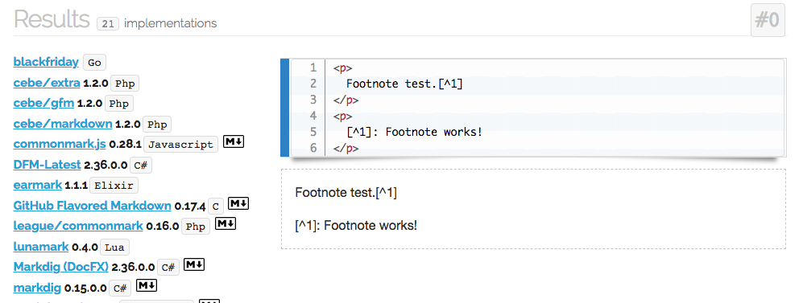
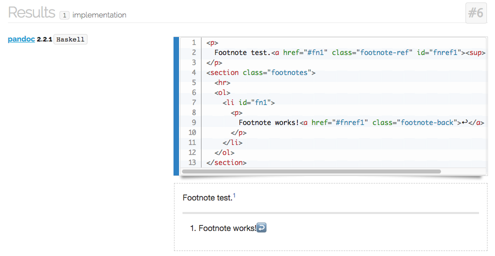

마크다운의 종류와 선택
저는 여러 정보나 생각을 글로 정리하길 좋아합니다. 마크다운(Markdown)은 이러한 목적에 정확하게 부합하는 툴입니다. 애초에 네이버나 티스토리가 아닌 Hexo 로 블로그를 시작한 것도 마크다운을 지원하기 때문이었습니다. 오늘은 마크다운의 종류에 대해서 알아보겠습니다.
Markdown
마크다운은 2014년 존 그루버(John Gruber)와 아론 스워츠(Aaron Swartz)가 함께 만든 마크업 언어(Markup language)입니다. 마크업 언어는 문서나 데이터가 화면에 어떻게 보이는지, 혹은 데이터의 구조가 어떻게 되는지를 부가적으로 설명해주는 언어입니다. HTML(Hyper-Text Markup Language)을 생각하면 쉽습니다. HTML이 해당 문서의 내용 외에 내용의 구조 및 디자인에 대한 정보를 가지고 있는 걸 생각하면 마크업 언어의 개념이 와닿으실 것 같습니다.

마크업 언어라는 말이 어렵더라도 상관없습니다. 마크다운은 정말 쉽습니다. 처음 만들어진 목적 자체가 '플레인 텍스트를 읽기 쉽고 쓰기 쉽게 하자’입니다. 간단한 문법(Syntax)을 지키면 일반 텍스트를 보기 좋게 다양한 포맷으로 변환해줍니다. 개발할 때는 README 파일을 만들 때 주로 사용하고, 각종 블로그를 포함해 글을 쓰는 곳이면 어디서나 많이 사용되고 있습니다. 저는 복잡한 내용을 체계적으로 정리할 때 마크다운을 사용하고 정리한 내용을 바로 블로그에 올리기도 합니다.
Implementations
존 그루버가 마크다운 텍스트를 HTML 로 변환하는 펄 스크립트(Markdown.pl)를 작성한 이후 많은 사람들이 다양한 언어로 마크다운 파서(Parser)를 구현했습니다. 그 과정에서 각 파서들은 기본적인 기능에 테이블, 각주, 정의 리스트 등 추가적인 기능을 덧붙이기도 했고, 공식 명세에 잘 나타나있지 않은 모호한 부분에 대해서는 각자 스타일로 구현하면서 파편화되었습니다.
여기서 기존 명세의 '모호한 부분’이란 뭘까요? 사실 마크다운은 굉장히 심플하기 때문에 별 문제 없어보이지만 막상 그것을 구현하고 할 때에는 자잘한 이슈에 부딪힙니다.
몇 가지 예를 들어 보겠습니다.
- 숫자 리스트 마커 1. 뒤에 2. 가 바로 오지 않는 경우, 다시 1. 로 시작해야할까, 아니면 2. 로 유지해야할까?
1 | 1. one |
1 | 1. one |
- 숫자 리스트 마커의 정렬은 왼쪽으로? 오른쪽으로?
1 | 8. item 1 |
- 숫자 리스트와 bullets 리스트가 붙어 있을 경우 하나의 리스트로 봐야할까, 두 개의 리스트로 봐야할까?
1 | 1. fee |
- 서브 리스트의 인텐드는 어디까지 들어갈 수 있을까?
1 | - one |
- marker 와 strong 구문 중 어떤 것을 우선시할까?
1 | *foo *bar* baz* |
이 외에도 다양한 이슈에 대해서 오리지널 명세에 나타나 있지 않거나 구현체마다 다르게 구현한 경우가 많습니다. 이에 따라 마크다운 표준화 작업이 진행되었습니다.
- RFC 7763 The text/markdown Media Type
- RFC 7764 Guidance on Markdown: Design Philosophies, Stability Strategies, and Select Registrations
마크다운 구현 파서 리스트를 보시면 마크다운 파서는 참 많고, 각자 기능도 조금씩 다르다는 걸 알 수 있습니다. 이외에도 개인적으로 입맛에 맞게 직접 만들거나 기존의 파서 라이브러리를 수정해서 사용하시는 분들도 있구요. 그래서 많은 마크다운 파서 중에서 RFC 에 나타나있는 몇 가지 마크다운에 대해서 간단히 알아보겠습니다.
- CommonMark
- GitHub Flavored Markdown
- MultiMarkdown
- Pandoc
CommonMark
CommonMark는 제각각으로 구현된 마크다운의 표준 문법을 정의하는 프로젝트입니다. CommonMark 에서 정의한 스펙에 따라 이를 기반으로 많은 마크다운 프로젝트가 생겨났습니다.
We propose a standard, unambiguous syntax specification for Markdown, along with a suite of comprehensive tests to validate Markdown implementations against this specification. We believe this is necessary, even essential, for the future of Markdown.
CommonMark 를 구현한 파서 리스트는 링크를 참고하세요.
GFM (GitHub Flavored Markdown)
GFM 은 GitHub 에서 기존 마크다운에 여러 기능을 추가하여 커스터마이징한 버전입니다. 깃헙 내에서 README.md 파일 같은 .md, .markdown 확장자를 가진 파일과 comments 를 달 때도 사용 가능해서 많은 개발자들이 사용하는 버전입니다.
GFM 은 Fenced Codeblocks, Syntax Highlighting, Tables, URL AutoLinking, To-dos, Strikethrough 등의 추가 기능을 지원합니다.
MultiMarkdown
MultiMarkdown 마크다운을 확장한 첫 프로젝트로, 기존 마크다운에 여러 기능을 추가한 버전입니다.
Pandoc
Pandoc 은 마크다운 텍스트를 다양한 포맷의 파일로 변환하는 기능을 강화한 마크다운입니다.
어떻게 선택해야할까?
대부분 본인이 사용하는 서비스에서 지원하는 마크다운을 사용하게 되겠지만, 본인에게 선택권이 있는 경우에는 마크다운 구현체가 워낙 많다보니 고민이 되실 수 있습니다. 무엇을 기준으로 선택할 수 있을까요?
마크다운을 파싱한 결과를 한번에 볼 수 있는 사이트가 있습니다. babelmark3라는 사이트인데요, 내가 필요로 하는 기능을 입력해보면 어떤 파서에서 그것을 구현하고 있는지 확인할 수도 있고, 같은 코드라도 어떤 식으로 표현하고 있는지 한번에 확인할 수 있는 굉장히 유용한 사이트입니다.
그럼 예를 한번 들어보겠습니다. 제 Hexo 블로그는 글을 작성하는 시점 기준으로 GFM 을 지원하는 렌더러를 사용하고 있습니다. 하지만 저는 출처를 남기거나 간단하게 보충 설명을 달 수 있는 ‘각주’ 기능이 필요한데 스펙을 보니 지원을 안하는 것 같습니다. 한번 확인해보겠습니다.

결과를 확인해보시면 총 34개의 파서 중에 21개의 파서가 해당 문법을 지원하지 않고 있네요. 이 중에는 각주 기능을 지원하지 않거나, 지원하더라도 해당 문법이 아니라 다른 문법으로 지원하고 있을겁니다. 현재 사용하는 GFM 도 목록 중에 있습니다.

다른 파서는 어떨까요? multimarkdown 을 보시면 각주 기능을 제대로 지원하는 것을 보실 수 있습니다.

재미있는 것은, 같은 기능을 지원하더라도 구현하는 방법이 같지는 않다는 것입니다. 다음은 pandoc 에서 변환한 결과인데 multimarkdown 과 조금씩 다른 걸 확인할 수 있습니다.

이번 포스팅에서는 마크다운이 무엇인지부터 마크다운의 종류, 그리고 구현체의 선택까지 알아봤습니다. 참고하셔서 마크다운 재밌게 사용하시면 좋겠습니다.
Related Posts
마크다운의 종류와 선택